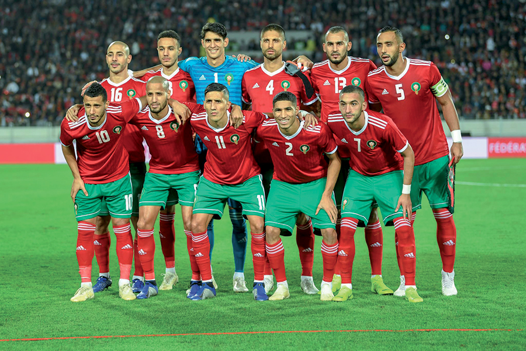
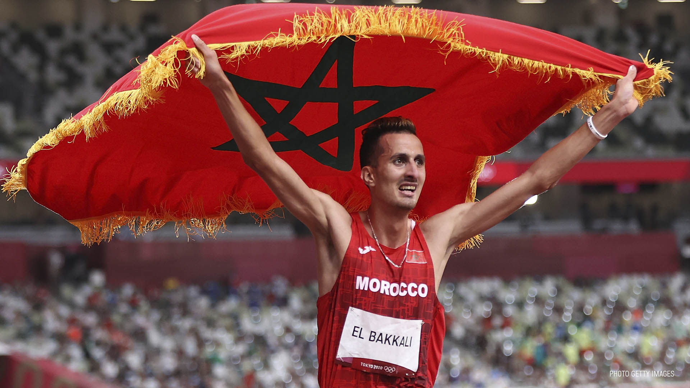
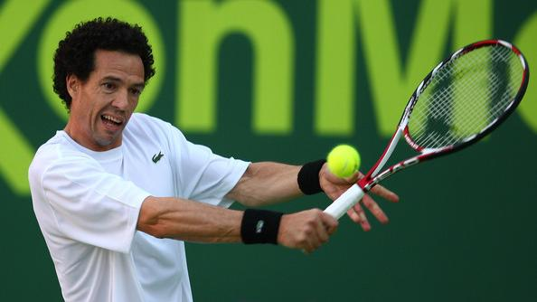

On effet, le football est le sport préféré des Marocains selon une étude réalisée par l’Observatoire de la consommation de Wassalaf. Il fait d’ailleurs l’objet d’une grosse audience sur ce site spécialisé dans les paris sportif. Le ballon d’or africain est revenu au Maroc pour la première fois grâce à Mohamed Faras en 1975 et l’équipe nationale de football marocaine a remporté en 1976 la coupe d’Afrique des Nations (CAN) faisant ainsi la fierté de tout le peuple marocain. Encore appelée l’équipe des lions de l’atlas, il s’agit de la première équipe africaine à avoir remporté en 2012 la Coupe des Nations Arabes face à la Libye. Autant dire que le football est une discipline sportive très prisée au Maroc grâce aux performances exceptionnelles de leur équipe nationale, mais également grâce au talent mondialement reconnu de ses joueurs comme : Mohamed Timoumi et Badou Zaki respectivement ballons d’or africain en 1985 et 1986. Tout cela justifie l’implication des volontés politiques dans ce secteur.
L’athlétisme fait partie des disciplines sportives qui ont fait rayonner le Royaume du Maroc grâce aux records enregistrés par ses athlètes lors des Jeux olympiques. Le premier arabe ayant remporté une médaille olympique est l’athlète marocain Abdeslam Radi, un passionné des courses de fond. Il s’agissait des Jeux olympiques de Rome en 1960 où l’athlète remporta une médaille d’argent. Mais avant lui Jouad Gharib, un athlète également spécialiste de la course d’endurance, inscrivait déjà le nom du Maroc en lettres d’or dans les annales. Il est le second marathonien de l’histoire à remporter deux championnats du monde de façon consécutive : en 2003 et 2005 en France et à Helsinki respectivement. D’autres grands noms renforcent également l’amour des marocains pour l’athlétisme : Hicham El Guerouj (2 médailles d’or aux Jeux Olympiques et 4 médailles d’or lors des championnats mondiaux) ; Nezha Bidouane (championne du monde en 1997 et en 2002, médaillée d’argent aux championnats mondiaux d’athlétisme en 1999) ; Saïd Aouita (seul homme capable de courir le 800 m en moins de 1 min 44 s).
Le record du 5ème set le plus long de l’histoire est détenu par le tennisman marocain Younès El Aynaoui face à Andy Roddick lors de l’Open d’Australie 2003, de quoi rendre fier le peuple marocain. Vu l’importance de ce sport au Maroc, il existe une fédération royale marocaine de tennis qui s’occupe d’organiser des compétitions prestigieuses en l’honneur de personnalités illustres du royaume comme Sa Majesté le roi Hassan II ou encore Son Altesse Royale la princesse Lalla Meryem. Elle se charge également de mettre en place un système de classement et de compétition nationaux.
